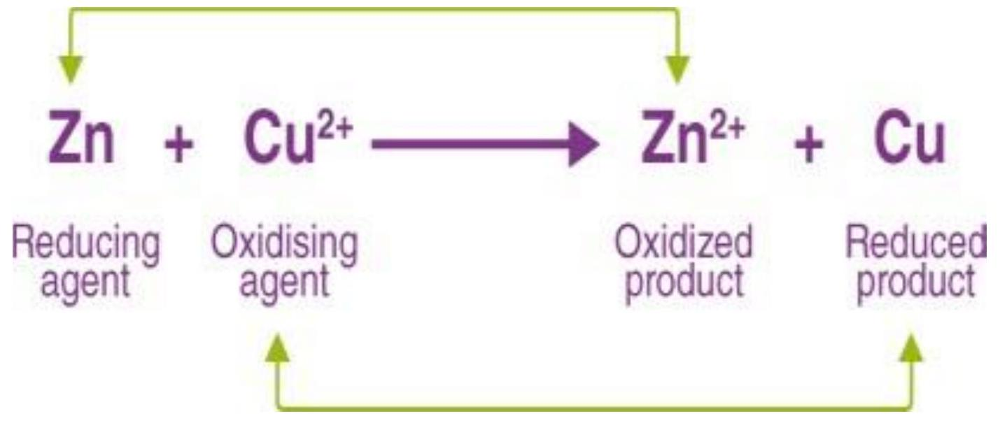
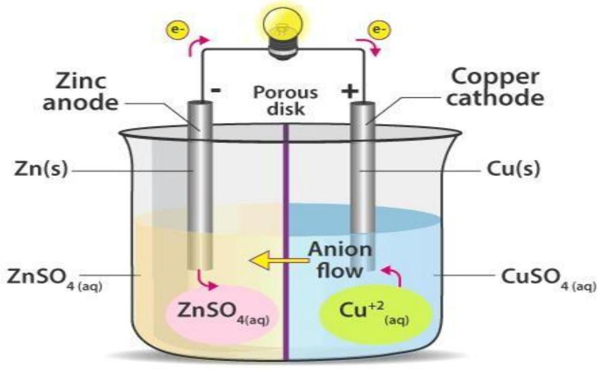

CHAPTER 7
MOLE CONCEPT
A mole is a substance which has a vogadros number ( $6 \times 10^{23}$ )
7.1 Definitions of terms.
7.1.1 The relative atomic mass (RAM)
The relative atomic mass (RAM) of an atom is the number of times an atom is heavier than one twelfth of a carbon-12 atom. It is calculated by adding together the number of protons and neutrons in an atom.
The atomic mass is usually a whole number unless where an element occurs in a number of isotopes. Here the atomic mass is the average atomic weight of the isotopes in the ratio of their existence.
Example 1.
Chlorine exist in two isotopic forms; ${ }^{35} \mathrm{Cl}$ and ${ }^{37} \mathrm{Cl}$ by percentage compositions of $75 \%$ and $25 \%$ respectively. Calculate the relative atomic mass of chlorine.
Every 100 atoms of chlorine there is 75 atoms of $\mathbf{C l}$ and 25 atoms of ${ }^{37} \mathrm{Cl}$. Total mass of 100 atoms
of chlorine
$=75 \times 35+25 \times 37$
$=3550$
Average atomic mass
$=\frac{3550}{100}$
$=35.5$
7.1.2 Relative formula mass of a compound (R.F.M):
To calculate the mass of one mole of a compound, the number of each type of atom in the compound is multiplied by that atoms relative atomic mass and all those numbers added together
This value is called the relative formula mass (or relative molecular mass or molar mass) of a compound
Examples of formula/molecular mass calculations:
Example 1:
The compound calcium hydroxide $\mathrm{Ca}(\mathrm{OH})_{2}$ (ionic)
Relative atomic masses are $\mathrm{Ca}=40, \mathrm{H}=1$ and $\mathrm{O}=16$
$\mathrm{Mr}=40+2 \times(16+1)=74$
7.1.3 Mass
a) Mass from amount:
The key mathematical equation needed here is -
mass (g) = relative formula mass (g mol -1) $\times$ amount (mol)
Using the the amount multiplied by the relative formula mass gives the mass
Example
(i) What is the mass of 0.25 mol of NaCl ?
0.25 mol of $\mathrm{NaCl}=58.5 \mathrm{~g} \mathrm{~mol}-1 \times 0.25 \mathrm{~mol}$
$=14.63 \mathrm{~g}$
b) Amount from mass :
Amount (mol) = mass (g) / relative formula mass (g mol-1.
Using the triangular relationship from above if the amount section is covered over then the mass divided by the relative formula mass gives the amount -
Example 1.
What amount is 117 g of NaCl ?
117 g of $\mathrm{NaCl}=117 \mathrm{~g} / 58$
$5 \mathrm{~g} \mathrm{~mol}-1=2 \mathrm{~mol}$
Example 2.
What amount is $68.4 \mathrm{~g}^{2}$ of $\mathrm{Al}_{2}(\mathrm{SO} 4)_{2}$ ?
4 g of $\mathrm{Al}_{2}(\mathrm{SO} 4)_{3}=68.4 \mathrm{~g} / 342 \mathrm{~g}$ mol $-1=0.2 \mathrm{~mol}$
7.1.4 Molar mass
Molar Mass is the mass in grams of 1 mole of a substance. It is numerically equal to its relative atomic mass or its relative formula mass. e.g., One mole of carbon weighs 12 g , 1 mole of oxygen molecule weighs 32 g , and 1 mole of ammonium sulphate weighs 132 g.
7.1.5 Relative formula mass of a compound (R.F.M)
To calculate the mass of one mole of a compound, the number of each type of atom in the compound is multiplied by that atoms relative atomic mass and all those numbers added together. This value is called the relative formula mass (or relative molecular mass or molar mass) of a compound. Notice that r.m.m, or Mr have no units because they are ratios
The molar mass is obtained from r.f.m, r.m.m, or Mr by simply adding g (grams).
The diatomic molecules of the element's hydrogen $\mathrm{H}_{2}$ and chlorine $\mathrm{Cl}_{2}$ relative atomic masses, Ar: $\mathrm{H}=1, \mathrm{Cl}=35.5$
Formula masses, Mr , are $\mathrm{H}_{2}=2 \times 1=2, \mathrm{Cl}_{2}=2 \times 35.5=71$ respectively
Percentage Composition in a Compound:
- Calculating % Composition (from masses of each element) Divide the mass of each element by the total mass of the compound and multiply by 100
- Calculating % Composition (from formula)
7.1.6 Molecular formula of a compound:
The molecular formula for a compound is simply the empirical formulae multiplied by some whole number (1, 2, 3, etc)
Knowing the molar mass of the compound enables the molecular formula of it to be found
Finding Molecular Formulas (when molar mass is known)
Calculate the empirical formula
use the equation : (empirical formula mass) $\times \mathrm{n}=$ molar mass
Find value for n : $\mathrm{n}=$ molar mass/empirical formula mass
7.1.7 Formulae: Empirical and molecular
The empirical formula (E.F) of a compound is the simplest formula which expresses its composition by mass. It does not give the exact number of various atoms present in one formula unit of molecule of a compound.
Example 16.
Determine the formula of a lead compound, given that 4.14 g of lead combines with 0.64 g of sulphur and 1.28 g of oxygen. We shall use the 'mole' concept to find the formula of the compound. Proceed as shown in the table below:
| Element Symbol | Lead, Pb | Sulphur, S | Oxygen, O | |
|---|---|---|---|---|
| Mass in g | 4.14 | 0.64 | 1.28 | |
| RAM | 207 | 32 | 16 | |
| No. of moles | $4.14=0.02$ | 0.64 = 0.02 | 1.28 = 0.08 | |
| 207 | 32 | 16 | ||
| Ratio of mole | $0.02=1$ | $0.02=1$ | $0.08=4$ | |
| 0.02 | 0.02 | 0.02 | ||
| No. of atoms | 1 | 1 | 4 | |
| E.F | PbSO4 | |||
Definitions
- The concentration of a substance is the number of moles or the mass of a solute dissolved or contained in a known volume of solution. Usually the concentration of a solution is expressed in either number of grams or number of moles of solute per litre of solution.
- A standard substance/primary standard is a pure substance whose mass can easily be weighed accurately and is used to standardize others.
Properties of primary standard
- Should have high molecular mass to be weighed accurately with little errors
- Should form stable solutions
- It should be stable in air, i.e., it shouldn't be hygroscopic, deliquescent, react with air, easily lose its water of crystallization and/or it should not be volatile.
- A Standard solution is a solution whose concentration is known, usually expressed in terms of molarity, mole/litre, moles/dm3, or grams/litre.
- The Molarity is the number of moles of the solute contained in 1 litre, 1000 ml or 1000 cm 3 of Solution.
Example .
Calculate the molarities of (a) 7 g of potassium hydroxide KOH , in 250 cm 3
Solution
- A molar solution is a solution containing 1 mole of a solute/substance per litre
Example 23.
Calculate the molarities of (a) 7 g of potassium hydroxide KOH , in 250 cm 3 solution.
(a) RMM of $\mathrm{KOH}=39+16+156 \mathrm{~g}$
7 g of KOH in $250 \mathrm{~cm} 3=28 \mathrm{~g}$ KOH in 1000 cm 3
=
b) RMM of $\mathrm{H} 2 \mathrm{SO} 4=2+32+64=98 \mathrm{~g}$
9.8g of H2SO4 in $2 \mathrm{dm} 3=4.9 \mathrm{~g}$ in 1 dm 3
=
Chemical equations
A chemical equation is a symbolic representation of a chemical reaction in which the reactants and products are denoted by their respective chemical formulae. The reactant side is the part of the chemical equation to the left of the '$\rightarrow$' symbol whereas the product side is the part to the right of the arrow symbol.
Example.
25.0 cm 3 of a solution containing a mixture of sodium carbonate and sodium hydrogen carbonate require 15.0 cm 3 of 0.5 M HCl using phenolphthalein indicator. Another 25.0 cm 3 of the same mixture required 34.5 cm 3 of the acid using methyl orange indicator. Calculate the concentration of the mixture with respect to: (i) sodium carbonate (ii) sodium hydrogen carbonate per dm3 of solution.
7.2 Redox Reactions
- Redox reactions are oxidation-reduction chemical reactions in which the reactants undergo a change in their oxidation states. The term 'redox' is a short form of reduction-oxidation. All the redox reactions can be broken down into two different processes - a reduction process and an oxidation process.
- oxidation. This is the loss of electrons and the corresponding increase in the oxidation state of a given reactants.
- Reduction. This is the gain of electrons and the corresponding decrease in the oxidation state of a reactant.
- The oxidation and reduction reactions always occur simultaneously in redox or Oxidation-Reduction reactions.
- oxidizing agents are Electron-accepting species which tend to undergo a reduction in redox reactions. The substance getting reduced in a chemical reaction is known as the oxidizing agent, while a substance that is getting oxidized is known as the reducing agent.
- Reducing agent are electron-donating species which tends to hand over electrons.
Summary of Terms Used in Describing Oxidation-reduction
| Term | Electron change | Oxidation number change |
|---|---|---|
| Oxidation | Loss of electrons | Increases |
| Reduction | Gain of electrons | Decreases |
| Oxidising agent | Receives electons | Decreases |
| Reducing agent | Loses electrons | Increases |
| Substances oxidized | Loses electrons | Increases |
| Substances reduced | Gains electrons | Decreases |
Illustration detailing the electron transfer between two reactants in a redox reaction Types of Redox Reactions
The different types of redox reactions are:
- Decomposition Reaction
- Combination Reaction
- Displacement Reaction
- Disproportionation Reactions
7.2.1 Decomposition Reaction
This kind of reaction involves the breakdown of a compound into different compounds.
Examples of these types of reactions are:
- $2 \mathrm{NaH} \rightarrow 2 \mathrm{Na}+\mathrm{H} 2$
- $2 \mathrm{H} 2 \mathrm{O} \rightarrow 2 \mathrm{H} 2+\mathrm{O} 2$
- $\mathrm{Na} 2 \mathrm{CO} 3 \rightarrow \mathrm{Na} 2 \mathrm{O}+\mathrm{CO} 2$
All the above reactions result in the breakdown of smaller chemical compounds in the form of $\mathrm{AB} \rightarrow \mathrm{A}+\mathrm{B}$
But, there is a special case that confirms that all the decomposition reactions are not redox reactions.
For example, $\mathrm{CaCO}_{3} \rightarrow \mathrm{CaO}+\mathrm{CO}_{2}$
7.2.2 Combination Reaction
These reactions are the opposite of decomposition reactions and hence involve the combination of two compounds to form a single compound in the form of $\mathrm{A}+\mathrm{B} \rightarrow$
$A B$. For example:
- $\mathrm{H}_{2}+\mathrm{Cl}_{2} \rightarrow 2 \mathrm{HClC}+\mathrm{O}_{2} \rightarrow \mathrm{CO}_{2}$
- $4 \mathrm{Fe}+3 \mathrm{O}_{2} \rightarrow 2 \mathrm{Fe}_{2} \mathrm{O}_{3}$
7.2.3 Displacement Reaction
In this kind of reaction, an atom or an ion in a compound is replaced by an atom or an ion of another element. It can be represented in the form of $\mathrm{X}+\mathrm{YZ} \rightarrow \mathrm{XZ}+\mathrm{Y}$.
Further displacement reactions can be categorized into
For example
$\mathrm{CuSO}_{4}+\mathrm{Zn} \rightarrow \mathrm{Cu}+\mathrm{ZnSO}_{4}$
Non-Metal Displacement
In this type of reaction, we can find a hydrogen displacement and sometimes rarely occurring reactions involving oxygen displacement.
7.2.4 Disproportionation Reactions
Disproportionation reactions are known as reactions in which a single reactant is oxidized and reduced.
For example: $\mathrm{P}_{4}+3 \mathrm{NaOH}+3 \mathrm{H}_{2} \mathrm{O} \rightarrow 3 \mathrm{NaH}_{2} \mathrm{PO}_{2}+\mathrm{PH}_{3}$
Examples of Redox Reactions
A few examples of redox reactions, along with their oxidation and reduction half-
reactions, are provided in this subsection.
Example 1: Reaction Between Hydrogen and Fluorine
In the reaction between hydrogen and fluorine, the hydrogen is oxidized, whereas the fluorine is reduced. The reaction can be written as follows.
The oxidation half-reaction is: $\mathbf{H}_{\mathbf{2}} \boldsymbol{\rightarrow} \mathbf{2} \mathbf{H}^{+} \mathbf{+} \mathbf{2 e}^{-}$
The reduction half-reaction is: $\mathbf{F}_{2}+\mathbf{2e}^{-} \rightarrow \mathbf{2F}^{-}$
The hydrogen and fluorine ions go on to combine in order to form hydrogen fluoride.
Example 2: Reaction Between Zinc and Copper
This is a type of metal displacement reaction in which copper metal is obtained when zinc displaces the $\mathrm{Cu}^{2+}$ ion in the copper sulfate solution as shown in the reaction below.
$\mathrm{Zn}(\mathrm{s})+\mathrm{CuSO}_{4}(\mathrm{aq}) \rightarrow \mathrm{ZnSO}_{4}(\mathrm{aq})+\mathrm{Cu}(\mathrm{s})$
The oxidation half-reaction can be written as: $\mathbf{Z n} \rightarrow \mathbf{Z n}^{\mathbf{2+}}+\mathbf{2e}^{\mathbf{-}}$
The reduction half-reaction can be written as: $\mathbf{C u}^{\mathbf{2+}}+\mathbf{2} \mathbf{e}^{-} \rightarrow \mathbf{C u}$
Thus, copper is displaced from the copper sulfate solution by zinc in a redox reaction.
Example 3: Reaction between Iron and Hydrogen Peroxide
$\mathrm{Fe}^{2+}$ is oxidized to $\mathrm{Fe}^{3+}$ by hydrogen peroxide when an acid is present. This reaction is provided below.
Oxidation half-reaction: $\mathbf{F e}^{\mathbf{2+}} \rightarrow \mathbf{F e}^{\mathbf{3+}}+\mathbf{e}^{-}$
Reduction half-reaction: $\mathbf{H}_{\mathbf{2}} \mathbf{O}_{\mathbf{2}} \mathbf{+2} \mathbf{e}^{-} \mathbf{\rightarrow 2} \mathbf{O H}^{-}$
Thus, the hydroxide ion formed from the reduction of hydrogen peroxide combines with the proton donated by the acidic medium to form water.
7.3 Oxidizing and Reducing Agents
a) Important Oxidizing Agents
- Molecules are made up of electronegative elements. Eg: $\mathbf{O}_{2}, \mathbf{O}_{3}$, and $\mathrm{X}_{2}$ (halogens)
- Compounds containing an element that is in the higher oxidized state. Eg: $\mathrm{KMnO}_{4}, \mathrm{~K}_{2} \mathrm{Cv}_{2} \mathrm{O}_{7}, \mathrm{HNO}_{3}, \mathrm{KClo}_{3}$
- Oxides of metals and non-metals. $\mathbf{E g}: \mathbf{M g O}, \mathbf{C u O}, \mathbf{C r O}_{\mathbf{3}}, \mathbf{P}_{\mathbf{4}} \mathbf{O}_{\mathbf{1 0}}$
- Fluorine is the strongest oxidizing agent.
b) Important Reducing Agents
- All metals, for example $\mathrm{Na}, \mathrm{Zn}, \mathrm{Fe}, \mathrm{Al}$
- A few non-metals such as C, Hydrogen, S, P
- Hydracids, for example $\mathrm{HCl}, \mathrm{HBr}, \mathrm{HI}, \mathrm{H}_{2} \mathrm{~S}$
- Few compounds contain an element in the lower oxidation state. Examples include: $\mathrm{FeCl}_{2}, \mathrm{FeSo}_{4}, \mathrm{SnCl}_{2}, \mathrm{Hg}_{2} \mathrm{Cl}_{2}$
- Metallic hydrides including $\mathrm{NaH}, \mathrm{LiH}, \mathrm{CaH}_{2}$, etc.
- Organic compounds like HCOOH
Lithium is the strongest reducing agent in the solution, and Cesium is the strongest reducing agent in the absence of water. The substances which act as oxidizing as well as reducing agents are $\mathrm{H}_{2} \mathrm{O}_{2}, \mathrm{SO}_{2}, \mathrm{H}_{2} \mathrm{SO}_{3}, \mathrm{HNO}_{2}, \mathrm{NaNO}_{2}$
Examples of the reduction potentials of some species are +2.866 V for $\mathrm{F}_{2}$ and -0.763 V for $\mathrm{Zn}^{2+}$.
7.4 Applications of Redox Reaction
Redox reactions have numerous industrial and everyday applications. A few of these applications of redox reactions are listed below.
7.4.1 Redox Reaction in Electrochemistry
The battery used for generating DC current uses a redox reaction to produce electrical energy.
Batteries or electrochemical cells used in our day-to-day life are also based on redox reactions. For example, storage cells are used in vehicles to supply all the electrical needs of the vehicles.
7.4.2 Redox Reaction in Combustion
An explosion is a fast form of combustion; hence explosion can be treated as a redox reaction. Even the space shuttle uses redox reactions. The combination of ammonium perchlorate and powdered aluminium inside the rocket boosters gives rise to an oxidation-reduction reaction.
7.4.3 Quantitative Analysis:
The redox reactions form the basic principle of the redox titrations carried out for the quantitative analysis of various substances. Redox titrations are carried out to find the concentration of any electrically charged species present in the sample solution. These are done by titrating the unknown substance against a standardized titrant whose concentration is already known to us. In this type of titration, the solution containing the unknown substance is kept in the bottom flask and the solution of the known titrant is filled in the burette. The solution from the burette is allowed to fall drop-wise in the bottom flask (containing the unknown substance and an indicator) till the indicator
changes the colour of the solution in the flask, indicating that the end point of the titration has reached. At the endpoint, the volume of the standardized titrant is noted down. This volume is equal to the volume of unknown substances required to neutralize the standardized titrant. The volume remaining in the sample solution is back-calculated by the total amount of the sample taken and thereby we can calculate the concentration of the unknown substance present in that solution. These reactions are quite useful in the pharmaceutical industry.
7.4.4 Real-Life Uses of Redox Reaction
- Production of some important chemicals is also based on electrolysis which in turn is based on redox reactions. Many chemicals like caustic soda, chlorine, etc., are produced using redox reactions.
- Oxidation-Reduction reactions also find their application in sanitizing water and bleaching materials.
- The surfaces of many metals can be protected from corrosion by connecting them to sacrificial anodes, which undergo corrosion instead. A common example of this technique is the galvanization of steel.
- The industrial production of cleaning products involves the oxidation process.
- Electroplating is a process that uses redox reactions to apply a thin coating of a material on an object. Electroplating is used in the production of gold-plated jewellery.
-
Extraction of Metals: The redox reactions find a great deal of application in the extraction industry to extract metals or minerals from the natural ores. Metals usually exist in an oxidized state in nature (due to their long-term exposure to the oxygen present in the air surrounding them). Hence, they need to be reduced in order to extract the required metal out of them. This is done in the industry on a large scale with the help of a suitable reducing agent, depending on the metal or ore which is to be refined. For example, iron is extracted from the oxidized ore
of ferric oxide in a large blast furnace in the iron extracting and refining industries using coke as a reducing agent. The reaction takes of iron metal extraction from its oxidized natural ore takes place as follows:
Reduction
Oxidation
-
Similarly, Aluminium is extracted from its ore, aluminium oxide $\mathrm{Al}(\mathrm{OH}) 3$
by means of reduction. Other metals extracted in the same manner include magnesium, sodium, calcium, potassium, lithium, and many others.